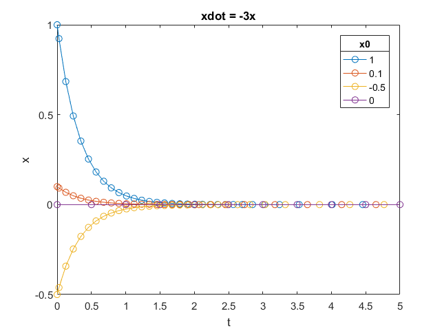

Homework 1
Due 9/12/16
Rachael Steiner
Contents
xdot = -3x
1) Sketch the 1D flow

2) Identify the fixed points and their stabilities, if any.
x = 0; stable
3) Simulate each, from at least 3 different initial conditions
tspan = [0 5]; x0 = 1; [t,x] = ode23(@(t,x) -3*x, tspan, x0); plot(t, x, '-o') title('xdot = -3x') xlabel('t') ylabel('x') hold on x0b = 0.1; [t,x] = ode23(@(t,x) -3*x, tspan, x0b); plot(t, x, ':d') x0c = -0.5; [t,x] = ode23(@(t,x) -3*x, tspan, x0c); plot(t, x, 's') title(legend('1','0.1','-0.5'), 'x0') hold off
xdot = 4x^2 - 16
1)

2) x = -2, stable; x = 2, unstable
3)
x0 = 0; [t,x] = ode23(@(t,x) 4*x^2-16, tspan, x0); plot(t, x, '-o') title('xdot = 4*x^2-16') xlabel('t') ylabel('x') hold on x0b = 2; [t,x] = ode23(@(t,x) 4*x^2-16, tspan, x0b); plot(t, x, ':d') x0c = 1; [t,x] = ode23(@(t,x) 4*x^2-16, tspan, x0c); plot(t, x, 's') title(legend('0','2','1'), 'x0') hold off

xdot = 1 + 0.5cosx
1)

2) no fixed points
3)
x0 = 0; [t,x] = ode23(@(t,x) 1+0.5*cos(x), tspan, x0); plot(t, x, '-o') title('xdot = 1 + 0.5*cos(x)') xlabel('t') ylabel('x') hold on x0b = 2; [t,x] = ode23(@(t,x) 4*x^2-16, tspan, x0b); plot(t, x, ':d') x0c = 1; [t,x] = ode23(@(t,x) 4*x^2-16, tspan, x0c); plot(t, x, 's') title(legend(num2str(x0), num2str(x0b), num2str(x0c)), 'x0') hold off

xdot = 1 - x^14
1)

2) x = -1, unstable; x = 1, stable
3)
x0 = 0; [t,x] = ode23(@(t,x) 1 - x^14, tspan, x0); plot(t, x, '-o') title('xdot = 1 - x^ 14') xlabel('t') ylabel('x') hold on x0b = -1; [t,x] = ode23(@(t,x) 1 - x^14, tspan, x0b); plot(t, x, ':d') x0c = 1; [t,x] = ode23(@(t,x) 1 - x^14, tspan, x0c); plot(t, x, '--s') x0d = 1.5; [t,x] = ode23(@(t,x) 1 - x^14, tspan, x0c); plot(t, x, '-*') title(legend(num2str(x0), num2str(x0b), num2str(x0c), num2str(x0d)), 'x0') hold off

About me and my goals
My main area of interest is in lexical knowledge. In particular, I am interested in how words are organized and how they interact with one another, as well as how they are acquired and what that might mean for the structure of their relationships. Graph theoretical networks are a growing topic of interest in this area, and a tool that I have been gaining experience with. One of the major criticisms of these networks, though, is that although predictions about function can be made to some extent based on the structure of the network, the networks themselves are static. Bringing in dynamics could help to enrich these networks and help make functional predictions more concrete. One dynamical system that I would like to be able to create would be a model of lexical acquisition---which words are acquired and when---based on the relationshops between the novel words and existing words, and on the properties of the environment in which the word is encountered.